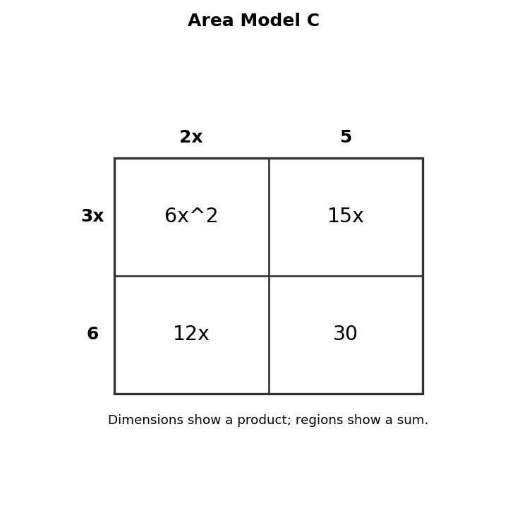
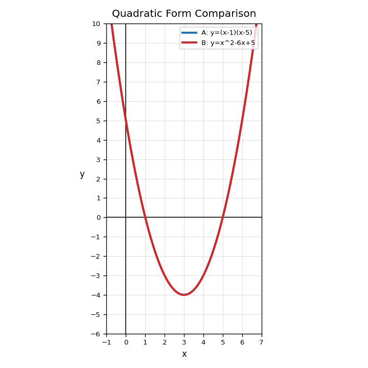

Find the greatest common factor of $20x^3$, $30x^2$, and $10x$.
Factor completely.
$$8x^3-12x^2+20x$$
Use Area Model C to explain how the same polynomial can be represented as a sum and as a product.

Design a mistake a student might make when factoring out a GCF. Then write feedback that would help the student revise the work.
What is the axis of symmetry of a parabola?
Which form makes zeros easiest to identify?
Does $y=2x^2-3x+1$ open up or down?
Are $(x-2)(x+6)$ and $x^2+4x-12$ equivalent? State yes or no before verifying.
Verify whether $(x-2)(x+6)$ equals $x^2+4x-12$.
Use the comparison graph. Describe one feature that both forms share.

Explain why different equivalent forms of a quadratic can be useful for different questions.
Create a short context that could lead to a quadratic area expression. Write the expression in two equivalent forms.
Identify the degree of $$-4x^5+9x^2-1$$.
Multiply and simplify.
$$(x-8)(x+3)$$
A student says $2x(3x+4)=6x+8x$. Identify the error and correct it.
Create two different polynomial expressions that simplify to the same expression. Explain how you know.